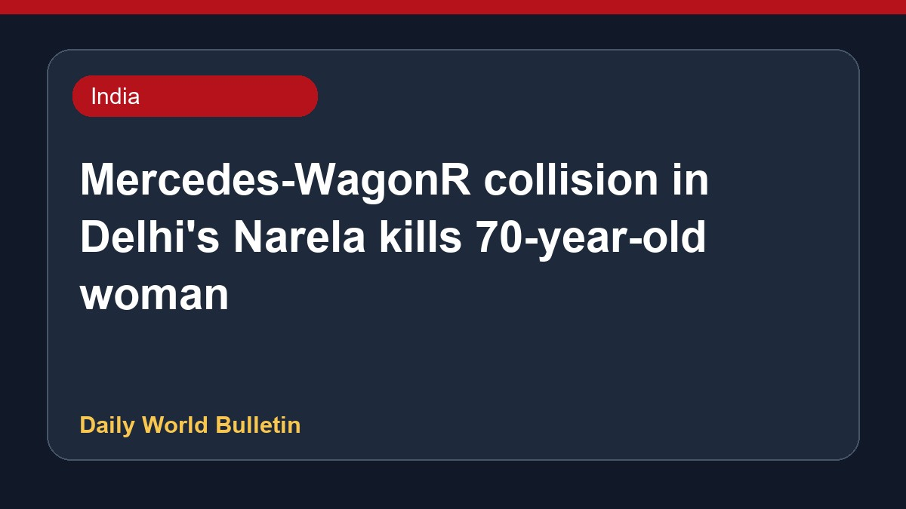

Mercedes-WagonR collision in Delhi's Narela kills 70-year-old woman

A seventy-year-old woman lost her life in Delhi's Narela area following a head-on collision between a Mercedes and a WagonR car. Reports indicate that the Mercedes was allegedly being driven by a policeman's son under the influence of alcohol. Authorities recovered a beer bottle from inside the luxury vehicle after the crash. Further details regarding the incident and subsequent police actions are awaited as investigations continue into the fatal accident.
Original source: India News Sources
Collision between Mercedes and WagonR kills 70-year-old woman in Delhi's Narela | India News - Hindustan Times ↗
Collision between Mercedes and WagonR kills 70-year-old woman in Delhi's Narela | India News - Hindustan Times ↗